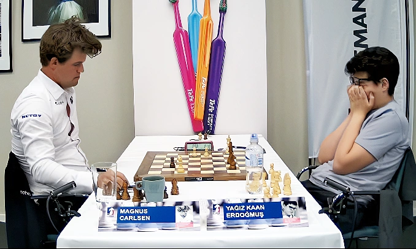

Hoàng Đức lập công, Ninh Bình chiếm lấy top 3 của Hà Nội
(Kết quả bóng đá) - CLB Ninh Bình giành chiến thắng 2-1 trước Hải Phòng trong trận đấu giàu cảm xúc, nơi Hoàng Đức tiếp tục để lại dấu ấn trước khi phải rời sân vì chấn thương.

(Kết quả bóng đá) - CLB Ninh Bình giành chiến thắng 2-1 trước Hải Phòng trong trận đấu giàu cảm xúc, nơi Hoàng Đức tiếp tục để lại dấu ấn trước khi phải rời sân vì chấn thương.

Nhiều CĐV Việt Nam đồng loạt phản ứng sau khi AFC đăng video tổng hợp trận gặp Yemen với hàng loạt pha bóng nguy hiểm của U17 Việt Nam bị bỏ qua.

Hình ảnh bùng nổ cảm xúc của cố vấn Park Hang Seo trên khán đài sau tiếng còi mãn cuộc gây chú ý lớn khi Bắc Ninh khiến Trường Tươi Đồng Nai thua trận đầu tiên mùa này.

Trung vệ Việt kiều Adou Minh nhiều khả năng sẽ có quốc tịch Việt Nam trong tháng 6/2026 và sẵn sàng cạnh tranh suất lên ĐT Việt Nam.

(Link xem trực tiếp) - Novak Djokovic sẽ có trận ra quân Rome Masters 2026 trước đối thủ anh từng đánh bại cách đây hơn 2 năm - Dino Prizmic.

Lịch thi đấu và kết quả LCK 2026 - giải vô địch LMHT Hàn Quốc, khởi tranh từ ngày 1/4.

Chiến thắng nghẹt thở trước Myanmar không chỉ đưa U17 nữ Việt Nam vào tứ kết châu Á mà còn tạo nên cơn sốt lớn trên truyền thông khu vực Đông Nam Á.

Lãnh đạo Quỷ đỏ đã tước áo số 10 để trao cho Matheus Cunha, đóng chặt cánh cửa quay trở lại Old Trafford của Marcus Rashford.

VNGGames và GALA Sports sẽ hợp tác phát hành trò chơi bóng đá di động Total Football VNG tại khu vực Đông Nam Á. Đặc biệt ở thị trường Việt Nam, cầu thủ Nguyễn Đình Bắc sẽ là Đại sứ thương hiệu trò chơi Total Football VNG.


Chiều 6/5, Valverde và Tchouameni suýt lao vào đánh nhau sau màn tranh cãi gay gắt vì một va chạm trên sân tập. "Một pha phạm lỗi châm ngòi cho màn đối đầu căng thẳng bậc nhất tại Valdebebas", nguồn tin từ nội bộ Real kể với Marca. Theo đó, Valverde và Tchouameni lao mặt vào nhau, xô đẩy và liên tục quát tháo, buộc các đồng đội phải can thiệp. Nhưng căng thẳng còn kéo dài do bộ đôi này vẫn to tiếng vặc nhau về tới tận phòng thay đồ.

Việt Nam nằm ở bảng A cùng đương kim vô địch Indonesia tại giải U19 Đông Nam Á 2026, diễn ra từ 1/6 đến 14/6. Lễ bốc thăm chia bảng được LĐBĐ Đông Nam Á (AFF) thực hiện vào chiều nay. Bên cạnh Indonesia, Việt Nam cùng bảng Timor Leste và Myanmar. Bảng B có Thái Lan, Malaysia, Singapore, Brunei. Bảng C gồm Australia, Campuchia, Philippines.
CanadaThủ quân Lionel Messi ghi dấu giày vào ba bàn, giúp Inter Miami thắng chủ nhà Toronto 4-2 ở vòng 12 MLS 2026. Ở trận trước, Messi ghi bàn và kiến tạo giúp đội nhà dẫn 3-0, nhưng vẫn thua ngược Orlando City 3-4. Lần này, siêu sao 38 tuổi thậm chí còn làm tốt hơn khi ghi một bàn và kiến tạo hai bàn khác, giúp Inter Miami dẫn Toronto 4-0. Chủ nhà chỉ gỡ lại được hai bàn, chấp nhận mất ba điểm cho đoàn quân Guillermo Hoyos.
Ninh Bình - Tiền đạo Geovane Magno của CLB Ninh Bình chính thức mang quốc tịch Việt Nam với cái tên Nguyễn Tài Lộc. Geovane sinh ngày 14/4/1994 ở Minas Gerais, Brazil. Anh trưởng thành ở các lò đào tạo trong nước, rồi thi đấu chuyên nghiệp tại các giải hạng thấp cho Primavera, Matonense, Sao Carlos và Maringa. Đến năm 2019, Geovane sang Việt Nam khoác áo Sài Gòn FC (nay đã giải thể).
Djokovic thua ngược đối thủ ở giải tennis Rome Masters 2026. Italy - Trong lần đầu thi đấu sau hai tháng, tay vợt huyền thoại Novak Djokovic thua Dino Prizmic 6-2, 2-6, 4-6 ở vòng hai Rome Masters.
Sau khi Italy không được dự World Cup 2026, kỳ vọng thể thao nước này dồn vào F1, nơi phong độ ấn tượng của tay đua trẻ Kimi Antonelli khiến đội đua Mercedes lo ngại. Antonelli mới 19 tuổi và là người trẻ nhất từng dẫn đầu bảng điểm F1. Hôm qua 3/5, tại Grand Prix Miami, anh giữ phong độ thăng hoa khi giành pole rồi thắng chặng thứ ba liên tiếp. Thành tích này khiến kỳ vọng từ quê nhà Italy tăng đột biến.
Mỹ - Trước thềm UFC 328, Khamzat Chimaev và Sean Strickland liên tục khẩu chiến gay gắt, đẩy căng thẳng lên đỉnh điểm trước khi xô xát nổ ra ngay trên sân khấu, buộc lực lượng an ninh và cảnh sát phải can thiệp. Ngay từ đầu, cả hai đã không được ngồi đúng vị trí quen thuộc trên bàn họp báo mà phải đứng đối diện dưới sự giám sát chặt chẽ của lực lượng an ninh và cảnh sát. Tuy nhiên, biện pháp này vẫn không thể ngăn màn khẩu chiến kéo dài và ngày càng gay gắt.

Thụy Điển - Kỳ thủ số một thế giới Magnus Carlsen lật ngược tình thế khi thắng ba ván cờ tiêu chuẩn cuối, trước khi hạ Arjun Erigaisi ở loạt tie-break TePe Sigeman 2026. Sau khởi đầu chệch choạc, Carlsen bứt lên mạnh mẽ ở giai đoạn cuối. Ở bốn vòng đầu, kỳ thủ Na Uy chỉ thắng một, hòa hai và thua một, trong đó có thất bại trước kỳ thủ Hà Lan Jorden van Foreest hôm 4/5. Khi đó, anh gần như bị gạch tên khỏi cuộc đua vô địch, do kém đỉnh bảng của thần đồng 14 tuổi Yagiz Kaan Erdogmus một điểm.
Mỹ - Abby Steiner, nhà vô địch điền kinh thế giới người Mỹ, cáo buộc các mẫu giày của Puma với công nghệ sợi carbon và nitrofoam gây chấn thương nghiêm trọng, buộc cô phải sớm dừng sự nghiệp thi đấu đỉnh cao. Steiner đệ đơn kiện Puma và đội đua Mercedes-AMG Petronas Formula One Team tại tòa án bang Massachusetts, cáo buộc các sản phẩm giày của hãng có thiết kế lỗi, gây ra hàng loạt chấn thương ảnh hưởng nghiêm trọng tới sự nghiệp.